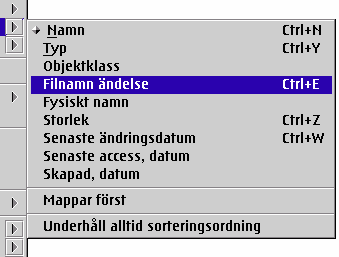

Viktig notering: F”r att undvika f”rvirring, „r sorteringsut”kningarna avaktiverade som standard. Du kan aktivera dom i "&xwp; Setup" objektet.
De nya &xwp; sorteringsfunktionerna „r:
F”r det f”rsta, nya sorteringskriterer s†dana som "objektklass" och "filnamns„ndelser" har introducerats.
F”r det andra, det finns nu ett nytt "super-kriterium" f”r att alltid sortera mappar f”rst, som till„gg till mappens standard sorteringskriterier. Till exempel, du kan sortera p† storlek och fortfarande f† alla mappar att sorteras fr†n toppen.
F”r allt detta, har "Sortera" submenyn i varje mapps kontextmeny blivit omarbetad ocks†:

Som du kan se, &xwp; l„gger till menyposter f”r "Underh†ll alltid sorteringsordning" och
"Sortera mappar f”rst" f”r snabb access.
Som till„gg, du kan snabbt „ndra standard sorteringskriterier f”r en speciell mapp genom att h†lla ner "Shift" tangenten medan du v„ljer sorteringskriterier i menyn "Sortering".